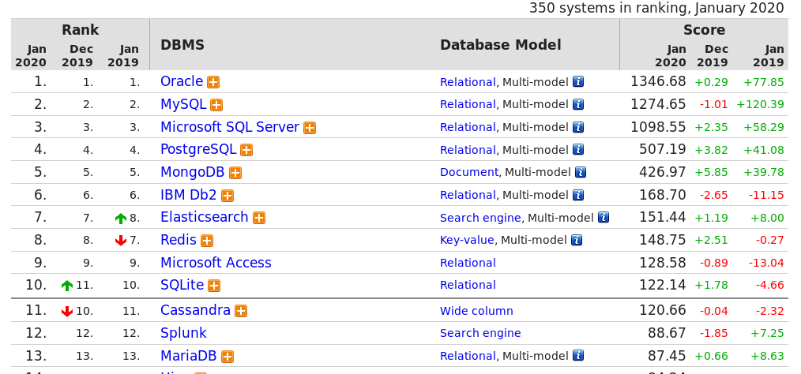

<!doctype html>
<html class="theme-5">
<meta charset="utf-8" />
<link href="../html-slideshow.bundle.min.css" rel="stylesheet" />
<link href="../style.css" rel="stylesheet" />
<script src="https://dbwebb.se/cdn/js/html-slideshow_v1.1.0.bundle.min.js"></script>

<title>Kursen databas</title>

<script data-role="slide" type="text/html" data-markdown class="titlepage center">
# Databas och SQL
## MySQL/MariaDB och SQL
### Mikael Roos
</script>


<script data-role="slide" data-markdown type="text/html">
# Agenda

* Om MySQL/MariaDB
* Databaser introduktion
* Grunderna i SQL

</script>


<script data-role="slide" data-markdown type="text/html" class="titlepage center">
# Om MySQL

</script>


<script data-role="slide" data-markdown type="text/html">
# MySQL

* Populär opensource databas, port 3306, release -95
* Utvecklare Michael Widenius, David Axmark
* Döpt efter Michels dotter My
* En del i [WLXM]AMP (linux/windows/mac, apache, mysql, php)
* MySQL AB i Uppsala erbjud support/dokumentation
* 2008: såldes till Sun för 1 miljard dollar
* 2010: Sun köptes av Oracle

</script>


<script data-role="slide" data-markdown type="text/html">
# MariaDB

* "drop-in replacement for MySQL"
* MariaDB döpt efter Michels dotter Maria
* Kommersiell via Monty Programs AB (Monty är Michaels smeknamn)
* Gundare är ursprungliga MySQL-grundarna samt Allan Larsson.
* Numer standard databas i [WLXM]AMP och i Debian/Linux v9
* Vilken bör man använda?

</script>


<script data-role="slide" data-markdown type="text/html" class="center">
# Ranking av databaser
<figure>
    
    <figcaption>Källa: https://db-engines.com/en/ranking</figcaption>
</figure>
</script>


<script data-role="slide" data-markdown type="text/html" class="center">
# Ranking av databaser
<figure>
    
    <figcaption>Källa: https://db-engines.com/en/ranking</figcaption>
</figure>
</script>


<script data-role="slide" data-markdown type="text/html">
# Referensmanualen

* Googla "mysql 8 doc" eller "mysql 8 doc select"
* Välj rätt version, kan finnas saker som skiljer mellan versioner
* Aktuell version 8.0
* MariaDB har egen referensmanual "mariadb doc"

</script>


<script data-role="slide" data-markdown type="text/html" class="titlepage center">
# Termer om databaser
</script>


<script data-role="slide" data-markdown type="text/html">
# Databas

* Organiserad samling av data

</script>


<script data-role="slide" data-markdown type="text/html">
# Database Management System

* Programvara för att interagera mellan användare/klient och databas
* Förkortas DBMS

</script>


<script data-role="slide" data-markdown type="text/html">
# Relational database

* Relationsdatabas
* Lagrar data baserad på relationsmodellen (relational model)
* Relation = tabell

</script>


<script data-role="slide" data-markdown type="text/html">
# Relation database management system

* Programvara för att interagera med en relationsdatabas
* Förkortas RDBMS

</script>


<script data-role="slide" data-markdown type="text/html" class="titlepage center">
# Relationsdatabas bygger på mängdlära (set theory)
</script>


<script data-role="slide" data-markdown type="text/html">
# Två mängder

```python
a = [0, 2, 4, 6]
b = [1, 2, 3, 4, 5]
```

* Ritas ofta som ringar.

</script>


<script data-role="slide" data-markdown type="text/html">
# Snitt

* Vilka siffror finns i båda mängderna?

```python
a = [0, 2, 4, 6]
b = [1, 2, 3, 4, 5]
```

</script>


<script data-role="slide" data-markdown type="text/html">
# Snitt...

* Vilka siffror finns i båda mängderna?

```python
a = [0, 2, 4, 6]
b = [1, 2, 3, 4, 5]
```

```python
snitt = [2, 4]
```

</script>


<script data-role="slide" data-markdown type="text/html">
# Union

* Vilka siffror finns om man slår samman de båda mängderna?

```python
a = [0, 2, 4, 6]
b = [1, 2, 3, 4, 5]
```

</script>


<script data-role="slide" data-markdown type="text/html">
# Union...

* Vilka siffror finns om man slår samman de båda mängderna?

```python
a = [0, 2, 4, 6]
b = [1, 2, 3, 4, 5]
```

```python
union = [0, 1, 2, 3, 4, 5, 6]
```

</script>


<script data-role="slide" data-markdown type="text/html">
# Differens

* Alla element i A som inte finns i B

```python
a = [0, 2, 4, 6]
b = [1, 2, 3, 4, 5]
```

</script>


<script data-role="slide" data-markdown type="text/html">
# Differans A B...

* Alla element i A som inte finns i B

```python
a = [0, 2, 4, 6]
b = [1, 2, 3, 4, 5]
```

```python
diffAB = [0, 6]
```

</script>


<!-- Slide -->
<script data-role="slide" data-markdown type="text/html">
# Differens B A

* Alla element i B som inte finns i A

```python
a = [0, 2, 4, 6]
b = [1, 2, 3, 4, 5]
```

</script>


<!-- Slide -->
<script data-role="slide" data-markdown type="text/html">
# Differens B A

* Alla element i B som inte finns i A

```python
a = [0, 2, 4, 6]
b = [1, 2, 3, 4, 5]
```

```python
diffBA = [1, 3, 5]
```

</script>


<script data-role="slide" data-markdown type="text/html" class="titlepage center">
# Låt oss lämna matematiken och återgå till databaserna

</script>


<script data-role="slide" data-markdown type="text/html">
# Relational algebra

* "Räkna" mängdlära, men mot relationsdatabas
* Databasen är mängder, relations (tabeller)
* Grunden är från mängdlära, aningen modifierat
* Teorin bakom SQL

</script>


<script data-role="slide" data-markdown type="text/html">
# Konstruktioner

Benämningar på konstruktioner i relational algebra

* Selection (välj rader)
* Projection (välj kolumner)
* Cartesion product (cross join)
* Set union (begränsningar)
* Set difference (begränsningar)

</script>


<script data-role="slide" data-markdown type="text/html">
# Cross join

* Två mängder. Gör en cross join mellan dem

```
colors = [♥, ♠, ♣, ♦]
values = [A, K, D, J, 10, 9, 8, 7, 6, 5, 4, 3, 2]
```

</script>


<script data-role="slide" data-markdown type="text/html">
# Vem uppfann "relationsdatabasen"?

* E. F. Codd 1970
*  "A Relational Model of Data for Large Shared Data Banks"
* Modell för att lagra data.
* Relational algebra för att hämta data.

</script>


<script data-role="slide" data-markdown type="text/html">
# Summering

* Databas är mängder och bearbetning av mängder
* Relationsmodellen och relationsalgebra (Codd 1970)
* Relation = tabell
* Relationsmodellen har sin bas i matematikens mängdlära
* Relationsalgebra har sin grund i mängdlära
* SQL bygger på relationsalgebra

</script>


<script data-role="slide" data-markdown type="text/html" class="titlepage center">
# Databasen, schemat och innehållet

</script>


<script data-role="slide" data-markdown type="text/html">
# Databas struktur

* Databas innehåller tabeller
* Tabell (relation)
* Rad (tuple)
* Kolumn (attribute)

</script>


<script data-role="slide" data-markdown type="text/html" class="center">
# Struktur av tabell
<figure>
    <div style="background-color: white"></div>
    <figcaption>Tabell = Relation, Rad = Tuple, Kolumn = Attribute</figcaption>
</figure>
</script>


<script data-role="slide" data-markdown type="text/html">
# Databas som kalkylark?

* Mental bild av databas

</script>


<script data-role="slide" data-markdown type="text/html">
# Tabell som kalkylark
<figure>
    
    <figcaption></figcaption>
</figure>
</script>


<script data-role="slide" data-markdown type="text/html">
# Tabell som kalkylark
<figure>
    
    <figcaption></figcaption>
</figure>
</script>


<script data-role="slide" data-markdown type="text/html">
# Fler vyer av databasen?

* Databasens struktur (schema) kontra innehållet

</script>


<script data-role="slide" data-markdown type="text/html" class="center">
# Databasens schema
<figure>
    
    <figcaption>Kan modelleras med ER diagram</figcaption>
</figure>
</script>


<script data-role="slide" data-markdown type="text/html">
# Fler vyer av databas, schema och innehåll
</script>


<script data-role="slide" data-markdown type="text/html">
# Databasen
```
MySQL [dbwebb]> show databases;
+--------------------+
| Database           |
+--------------------+
| dbwebb             |
| information_schema |
| mysql              |
| performance_schema |
| sys                |
+--------------------+
5 rows in set (0.001 sec)

MySQL [dbwebb]> use dbwebb;
Database changed
```
</script>


<script data-role="slide" data-markdown type="text/html">
# Databasens schema
```
MySQL [dbwebb]> show tables;
+------------------+
| Tables_in_dbwebb |
+------------------+
| course           |
| student          |
| student2course   |
+------------------+
3 rows in set (0.001 sec)
```
</script>


<script data-role="slide" data-markdown type="text/html">
# Schema för tabell
```
MySQL [dbwebb]> show create table course \G;
*************************** 1. row ***************************
       Table: course
Create Table: CREATE TABLE `course` (
  `code` char(6) NOT NULL,
  `name` varchar(40) NOT NULL,
  `nick` char(10) NOT NULL,
  `points` decimal(2,1) DEFAULT NULL,
  PRIMARY KEY (`code`)
) ENGINE=InnoDB DEFAULT CHARSET=utf8mb4 COLLATE=utf8mb4_0900_ai_ci
1 row in set (0.000 sec)
```
</script>


<script data-role="slide" data-markdown type="text/html">
# Välj och visa
```
MySQL [dbwebb]> select * from student;
+---------+--------------------+
| acronym | name               |
+---------+--------------------+
| doe     | John/Jane Doe      |
| efo     | Emil Folino        |
| lew     | Kenneth Lewenhagen |
| mos     | Mikael Roos        |
| zeldah  | Andreas Arnesson   |
+---------+--------------------+
5 rows in set (0.001 sec)
```
</script>


<script data-role="slide" data-markdown type="text/html" class="titlepage center">
# Hur prata med databasen?

</script>


<script data-role="slide" data-markdown type="text/html">
# SQL

* Structured Query Language
* ISO Standard: SQL-87, SQL:92, SQL:1999, mfl
* Grunden är lika men varierar mellan RDBMS
* Admin-hantering varierar mellan RDBMS
* Programmeringskonstruktioner inuti database (procedurer, funktioner, triggers, inbyggda funktioner, mm)

</script>


<script data-role="slide" data-markdown type="text/html">
# SQL DDL kontra DML

* DDL - Data Definition Language
    * Manipulera databasens schema
* DML - Data Manipulation Language
    * Manipulera databasens innehåll

</script>


<script data-role="slide" data-markdown type="text/html">
# SQL DDL

* CREATE DATABASE / TABLE / VIEW
* DROP DATABASE / TABLE / VIEW
* ALTER DATABASE / TABLE / VIEW
* (manipulera databasens schema/struktur)

</script>


<script data-role="slide" data-markdown type="text/html">
# SQL DML

* SELECT
* INSERT
* UPDATE
* DELETE
* (manipulera innehållet i databasens tabeller)

</script>


<script data-role="slide" data-markdown type="text/html">
# Ett exempel

```
code        name        points
----------  ----------  ----------
PA1439      htmlphp     7.5
PA1436      design      7.5
DV1531      python      7.5
DV1532      javascript  7.5
```

</script>


<script data-role="slide" data-markdown type="text/html">
# CREATE DATABASE

```sql
CREATE DATABASE bth;
```

</script>


<script data-role="slide" data-markdown type="text/html">
# CREATE TABLE

```sql
DROP TABLE IF EXISTS course;
CREATE TABLE course
(
    code CHAR(6) PRIMARY KEY NOT NULL,
    name VARCHAR(40) NOT NULL,
    points REAL NOT NULL
);
```

</script>


<script data-role="slide" data-markdown type="text/html">
# Datatyper

* Datatyper skiljer mellan DMBS
* I grunden liknande datatyper

</script>


<script data-role="slide" data-markdown type="text/html">
# Vanliga datatyper

* CHAR, VARCHAR, TEXT, BLOB
* INTEGER, SMALLINT, TINYINT, MEDIUMINT, BIGINT
* BOOLEAN
* FLOAT, DOUBLE
* NUMERIC, DECIMAL
* DATE, DATETIME, TIME, TIMESTAMP

</script>


<script data-role="slide" data-markdown type="text/html">
# INSERT INTO

```sql
INSERT INTO course VALUES ('DV1462', 'htmlphp', 7.5);

INSERT INTO course VALUES
    ('PA1436', 'design', 7.5),
    ('DV1531', 'python', 7.5),
    ('DV1532', 'javascript1', 7.5);

INSERT INTO course (code) VALUES ('DV1462');
```

</script>


<script data-role="slide" data-markdown type="text/html">
# UPDATE

```sql
UPDATE course
    SET
        course = 'PA1439'
    WHERE
        course = 'DV1462'
    LIMIT 1;
```

</script>


<script data-role="slide" data-markdown type="text/html">
# Tänk på

* UPDATE utan WHERE
* UPDATE utan LIMIT 1?

</script>


<script data-role="slide" data-markdown type="text/html">
# SELECT

```sql
--
-- A comment starts with two dashes
--
SELECT * FROM course;
SELECT name FROM course;
SELECT name, points FROM COURSE WHERE code = 'PA1439';
SELECT * FROM COURSE WHERE code LIKE 'PA%';
```

</script>


<script data-role="slide" data-markdown type="text/html">
# DELETE

```sql
DELETE FROM course WHERE code LIKE 'DV%';
DELETE FROM course WHERE code IN ('PA1439', 'PA1436');
DELETE FROM course
    WHERE code = 'PA1439'
    LIMIT 1
;
```

</script>


<script data-role="slide" data-markdown type="text/html">
# Tänk på

* DELETE utan WHERE
* DELETE utan LIMIT 1?

</script>


<script data-role="slide" data-markdown type="text/html">
# Sammanfattningsvis SQL

Definition av schema

* SQL DDL
    * CREATE, DROP, ALTER

Manipulering av data

* SQL DML
    * INSERT, UPDATE, DELETE
    * SELECT

</script>


<script data-role="slide" data-markdown type="text/html">
# Avslutningsvis

* Frågor på det?

</script>


<script data-role="slide" data-markdown type="text/html">
<!-- empty slide by intention -->
</script>
